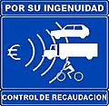

Guardia Cerril
 De: La Frikipedia, la enciclopedia extremadamente seria.
De: La Frikipedia, la enciclopedia extremadamente seria.
Ejemplo de agente del cuerpo.
 Actividad de la Guardia Civil.
«¡¡¡¡¡Aaaaalto ahi, cojones!!!!!!»
~ Guardia Civil a un gitano que pasaba por la zona
«A ver, sople aquí»
~ Guardia Civil pronunciando tan demoledora frase
«¡¡¡¡¡Ayyyyyyy señó Agente, que yo noh sio, que ha sío mi primo el Yoniiiii!!!!!!»
~ El mismo gitano de antes en su réplica
«¡¡¡Me cagüen la leche!!!, ¡¡¡ Como me tenga que bajar del Nissan...!!!»
~ Guardia Civil en una manifestación ante de actuar el Guardia solito ante 500 manifestantes
La Guardia Cerril, conocida intrínsecamente como Guardia Civil, es una famosa fuerza policial aspañola datada de la época de la Guerra de Independencia.
Guardia Civil'
Institución garante del sosiego del Estado, creado gracias al cruce hecho por el Conde Haumao y la Pasionaria en 1866 y utilizando para ello a un labriego con grandes bigotes y un maestro escuela regla de madera en mano. Popularmente llamada Benemérita; y otros insultos que obviaremos por no ofender, es un Instituto "Armao",a veces militares, a veces no, según convenga al mando de turno o al político inepto que les dirija, parte de las Fuerzas y Cuerpos de Seguridad de España y enrededores.
Defensores de los derechos y libertades de los españoles, y de los que creen que no lo son -¡¡¡por mis cojones que este catalán habla en castellano!!!; frase pronunciada por un Teniente al para un coche en pleno solano castellano manchego-, tienen como misión fundamental garantizar la seguridad del estado, bien sea en médios sólidos, gaseosos, etereos, religiosos o líquidos.
Emblemas y signos distintivos
Estos especímenes están dotados de su capa característica, de color verde y siendo esta antibalas, y el tricornio, de alta tecnología de recepción satélite conectado por wifi con la central; portando a las veces la teresiana, de menor tecnología, pero de igual eficiencia, con USB incorporado y transmisión de datos del tacógrafo al pliego denuncia por Bluetooth.
Hoy día dejan que los niños se acerquen, lo que les has granjeado un gran cariño de estos, y gracias a su su parecido con las Tortugas Ninja.
Pueden moverse en diferentes medios de transporte, ya sea por agua (barcos, lanchas, buzos), tierra (coches, motos, burros también conocidos como jamelgos) y aire (helicópteros, aviones, libélulas), lo que les convierte en seres difíciles de esquivar.
El lema de la Guardia Civil es: «el Honor es mi Divisa», siendo el oficioso, "pos mis santos cojones", de mayor aceptación entre sus miembros, y "creo que me he cagao" el lema de los que suelen ser detenidos.
Características

Merchadising oficial de la Benemérita
- Bandas sonoras: colocadas por doquier (especialmente si son del Fary), se cree que las más gordas son guardias civiles tumbados.
- Recorrido de las Patrullas: Pasarse el día dando vueltas con el coche, sin ningún propósito concreto salvo el de pasearse y provocar el pánico o despiste de la ciculación para poner multas.
- Seres robóticos: La mayoría de agentes son Cyborg controlados por un super-ordenador inteligente llamado Central, que a través de un algoritmo llamado PikoletoRank que combina inteligencia artificial y tecnología GPS, se organizan los recorridos de las patrullas de tal forma que cuanto mayor es la gravedad del delito más lejos se encontrará la patrulla más próxima, al objeto claro esta de proteger la integridad de los miembros del cuerpo.
- Vigilancias nocturnas: Es frecuente, en el turno de noche que estos se encuentren reflexionando sobre las actuaciones hechas por los compañeros durante el día, la combinación perfecta para quinielas, o practicando de forma activa meditaciones zen que consiga eliminar la mala leche adquirida al hablar con el sargento.
- Inspecciones rutinarias: Por el día es frecuente encontrarlos en algún bar realizando la pertinente acta de inspección de bebidas, así como el control de la salubridad de los alimentos y el orden público en estos establecimientos.
De vez en cuando hacen operaciones especiales para incautar armas o droga para más tarde subastarlo y que los traficantes tengan que comprarlo a un precio descomunal y así sacar un buen cacho (esta práctica es un circulo vicioso, ya que las armas y la droga vuelven a ser incautadas y subastadas de nuevo, ¿¿¿o como creías que había superávit en la SS???).
- Punto de encuentro: Su lugar de rituales se llama "Casa Cuartel" y es donde pasan mayor parte del tiempo haciendo fiestas y comprobando que la droga incautada es de "buena calidad", para así usar como prueba del delito una droga menos "pura" (todos los "mascaos" ya saben donde buscar...).
- Métodos disuasorio: Suelen llevar una pistola, adorno perfecto en la cintura, y soporte perfecto para apoyar el brozo. Aunque normalmente se la dejan olvidada en el bar, no hay riesgo ya que empeñan las balas en el Cash Converter o las gastan en caza furtiva.
- Pasatiempo preferido: Rescatar manifestantes anti-trasvase aragoneses en tiempos de riadas, proteger delincuentes y/o ecologistas de linchamientos populares.
- Principales enemigos: Sus enemigos naturales son el Etarra
- Anecdotas: Los que llevan bigote tienen una predisposición genética a decir tacos mientras empuñan su arma reglamentaria y hacen disparos aire, en casos graves estas acciones se dan al tiempo que intentan golpes de estado a su puta bola y sin contar con nadie.
- Nuevas tecnologías: Símbolo de la gran modernidad que caracteriza al Cuerpo se encuentra el uso de la espada laser de la guerra de las galaxias del porno, arma que fulmina y acojona a los usuarios de los coches na mas verlo.
El coche de la guardia civil
Se suele asociar a la Guardia Civil con un modelo arquetípico de la marca Nissan, el "Patrol", cuyo nombre, solo al ser escuchado ya pone los pelos de punta, junto con el apelativo "de la Guardia" suele acojonar hasta al turista mas despistao. Este modelo ya casi en deshuso, ha sido histórico junto con el cuatro latas y el anrover. Hoy en día es freciente ver y oir al Nissan Terrano II, aunque malas lenguas dicen que tienen otros modelos (incluso afirman haber visto un ferrari FXX, pero no se sabe) , los cuales es dificil de identificar ya que correr y ver la marca es dificil.
Existe una leyenda (que no es una leyenda porque son muchos los testimonios de gente que lo ha visto) que habla de la existencia de un coche de la guardia civil fantasma. Es, como su propio nombre indica, un Nissan Terrano II destartalao. Este coche aparece repentinamente de la nada y te da el susto de tu vida. Siempre que haya alguien a punto de cometer una infracción, sintiéndose completamente solo en la carretera, en un semáforo o en medio del campo, a 300 km/h, aparece el coche fantasma para meterle un paquete.
Como decíamos, existen muchos testimonios reales, de gente real, cotidiana, fiable, que asegura haberse topado con dicho vehículo. Estos son algunos de ellos:
- Julia María de las Mercedes: hallándome yo circulando por la M30 sin ninguna alma ni coche a la vista, circulando por el carril de en medio para más seguridad, teniendo en cuenta que era de noche y que ni una sola luz alumbrando la misma, apareció un coche tras de mí dándome las luces. Creyendo yo que se tratase de un pringaó que se me estaba pegando mucho y que queriendo putearme, empecé a soltar improperios hasta que decidí cambiar de carril. Fue entonces cuando lo vi. Siendo un coche de tráfico apareciendo de la nada. El resto de la historia es evidente. Me pusieron una denuncia, los guardia civiles, por entorpecer el tráfico de la vía
- Paco Casas Tejados: era una fría noche de verano en la que apenas los copos, con forma de estrellas estrelladas, de nieve que caían sobre mi parabrisas me dejaban ver. Pero si que podía ver que me encontraba solo en la carretera como si fuera un pequeño pescadito perdido en el inmenso mar. Decidí entonces sacar mi móvil para llamar a mi querida esposa, mi alma gemela, mi otro trozo de yo para explicarle que estaba asustado y que rezase por mi para que no me pasara nada. Entonces, de la nada, aparecieron unas luces azules como el cielo y me di cuenta que el coche de la guardia civil, verde y blanco, "los del betis" me dije yo; me pedía que me echara a un lado. El dolor invadió todo mi cuerpo cuando me dijeron que tendría que pagar multa y puntos por hablar por el móvil, "pero si no he tenío ningún accidente" me dije.
- Paco Gordo: Pos que estaba yo con un ciego que no veía, y en esto que voy y que digo - estoy más sólo que la una, a que me pongo a circular por el carril contrario ¿qué no? - Y que no va y de pronto se me aparece asín de la nada un coche de la guardia civil. Pero que de la nada eh, que te lo juro tron. Así que van y se bajan dos picoletos y me hacen el test de alcoholemia y van y me dicen que me quitan tos los puntos. Me cago en sus putas madres y en tos sus muertos. Como me quiten los puntos les quemo la casa, ¡¡¡a vé sila encuentro!!!.
- Karl Weetabix: estando yo condusiendo en una inhóspita carretera toledana a las tantas de la mañana me encuentro un microbús en-delante, y me digo: apago las luces a ver cómo se ve la noche así, total, me ilumina el microbús. Después de mirar a tós los laos y comprobar que no había riesgo para mí, para otros, para el vehículo, ni para la fauna de la zona, me desido a apagar tó. Tó se vuelve oscuro y a los sinco segundos aparesen por el carril contrario TRES coches fantasma de la benemésita, y veo por el retrovisor cómo frenan en seco, dan la vuelta y ponen las luses. Adelanto e intento perderme en la noche, lo consigo, y no se como, detrá de una calle de un pueblacho de castilla, otro cose fantáhma de la na,unas cuantas multas consiguientes (y control de alcoholemia, negativo).
- Mohamed Yosuf: io estiaba konduziendo pior una kiarretera a lias sieis di la mianiana para ir al quiampo a triabajar mis dioze oras del dia kuandio apiarece de la ezpiezura uno de ezos malditos kioches diandole a lias luzes. Y diezpuez de eztiar kon ellioz duriante triez oraz en laz k mi ano termino del tiamaño de una manio de gurdiazibil, mie mietierion kion elloz a lia ezpiezura y en mi nuka apiarecio un eztsaño abiujero. eze dia nio fui a triabajar, ni niunka maz.
- Patxi Agirrezabalaga: Eztaba yo kon mi furgoneta yendo pa Bilbao kuando derrepente, Aibalaostia! los guartzabillas! y dandome el alto. Y no ze lez okurre nada mejor k registrar todo el kotxe, ezo zi muy amables e! lo raro ez k kuando a 2 kilometroz me dieron el alto otroz guartzabillas y me bolbieron a dar el alto y regiztrar, enkontraron en medios del maletero a la bizta de tolmundo una piztola, un pazamontañaz y un kilo de spiz, kaguendios! el rezto oz imaginaiz no?? ahora dizen k zoi narkotrafikante kolonbiano y de
la ETA!
- Borja Mari de Buen Parné y de Monte Alto: Pues en eso que iba yo con mi utilizario, mi merche blanco descapotable, y como, osea, que hacia un superrrrrrrrrrrrrrcalor que te cagastelojuro de verdad, le bajé la capota y aumenté la velocidad un poco por encima de lo habitual, sin que me despeinara, y, ¡¡¡que fueeeeerte!!! que me vi dos luces azules detrás mia... y no os lo podeis creer ¡¡¡tiaaaa!!! que eran dos tios de verde super orteras, nada kuuuul que decian ser noseque civiles y que me iban a quitar el coche o algo así, menos mal, por papá que no... y lo impresionante es que era un coche destartalado sucio y feo, como el obrero que limpia la piscina Chonchi, de verdad que te lo juro por papi.
¿Sabias qué...
- ...tienen, por eso no lloran,de plomo las calaveras [...] y ocultan en la cabeza una vaga astronomía de pistolas inconcretas?
- ...el personaje de Piccolo fué creado por Akira Toriyama tras unas vacaciones en España?
- ...no tienes bemoles para fugarte de este coche de la Benemerita??
- ...cuando dos o mas guardias se alejan por un camino en el coche es para fumar porros y cazar furtivamente?
- ...ni Catalunya ni en Euskadi existe la Guardia Civil, pero aparecen cuando menos te lo esperes?
- ...en su lugar están los La Ertzaintza respectivamente, maquinas perfectas de recaudar?
- ...pero que hay muy pocas diferencias entre las tres a la hora de actuar?* ...
- ...el verde de su traje es porque son de Grinpis y no quieren que se extinga la mariguana cuando te la fumas?
- ...el triscornio lleva un alambre de espino bañado en gindillas que es lo que desata la mala leche comun entre los civiles?
Véase también
Autor(es):
- Krusher
- Nexo
- Cortocircuito
- Hari Seldon
- Doctor grijander
- Aque
- Aram
- Seymour M
- Khazike Khashondo
- Arraky
Frikipedia 2005-2016, Licencia
GFDL 1.2 - Extraído por FrikiLeaks